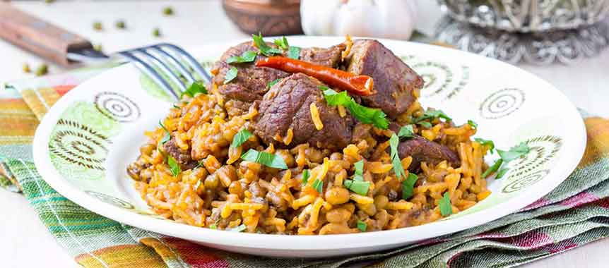

Essa's Kabsa
Saudi Traditional Food
Kabsa is the national Saudi dish, and our beef kabsa recipe is actually very easy to make! The mixture of spices used give it its unique taste.
KABSA INGREDIENTS
KABSA PREPARATION
